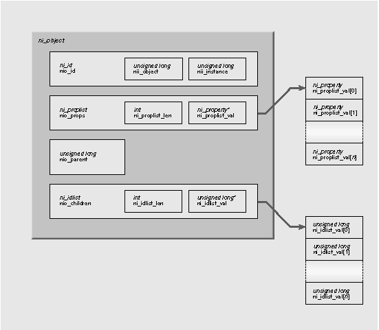
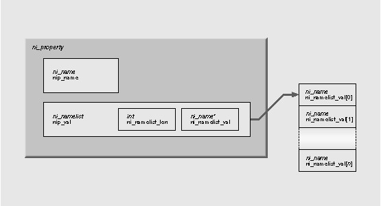

NEXTSTEP In Focus, Winter 1994 (Volume 4, Issue 1).
Copyright ©1994 by NeXT Computer, Inc. All Rights Reserved.
NetInfo Programming
Marc Majka
The NetInfo programming library and NetInfo Kit provide tools for building your own administrative applications and utilities. These tools include a number of data structures and objects, plus library routines for accessing and manipulating NetInfo data. This article provides a quick introduction to this set of resources.
Building Your Own Tools
When you think of NEXTSTEP system and network administration, you probably think of applications like User Manager and NFS Manager that configure and maintain services on your network. You might occasionally use NetInfo Manager to inspect one of your NetInfo databases, and you might even use niutil in a shell script to perform some administrative tasks.
What you might not know is that NEXTSTEP also provides you with tools to write your own utility programs and custom resource management applications. These tools are NetInfo Kit and the NetInfo programming library.
To use the NetInfo library, you need to be familiar with programming in C. The library defines a set of functions that access NetInfo database servers and a set of data structures for holding NetInfo data. NetInfo Kit contains some useful objects that you can use in your Objective C programs together with the NetInfo library.
Writing programs that access NetInfo also requires a good working knowledge of how NetInfo works. The articles in the Summer 1993 issue of NEXTSTEP In Focus provide excellent background information.
The Programmer's Point of View
As a system administrator, you know that NetInfo is a database system that stores configuration information and administrative records. Many different programs access NetInfo database servers to look up this information. As a NetInfo programmer, you'll need to keep in mind that NetInfo is really a collection of database servers.
A NetInfo domain is a set of servers that work together to keep their databases synchronized. Only one of them--the master server--accepts operations from clients that modify its database. When the master modifies its database, it immediately instructs all the other servers for that domain--the clone servers--to perform the same modification. This way, all the databases in the domain remain identical.
Connecting where you want to
When you write a program, you can choose to make a connection to a specific server if you wish, but the NetInfo library will also let you just specify the domain you want to access. Your program gets a connection to one of the servers for that domain. Because they all have identical data in their databases, it doesn't matter which server your program contacts.
The library routines automatically connect your program to the master server if the server does any write operations. If your program is just reading data, the library detects communication failures and automatically reconnects you to another server. NetInfo always attempts to make connections to servers that respond most quickly, to provide client programs like yours with the fastest service.
Moving in the hierarchy
If your program needs to establish connections to various domains, you can navigate throughout your NetInfo domain hierarchy using both absolute and relative domain names. For example, you can open a connection to the / domain (the root domain) or the /marketing domain, and you can connect to the parent (..) of a domain or to a child domain.
Your program can have many connections open at one time. Each open connection is represented by a handle. When you call a library routine, you pass that routine a handle, which contains all the information the routine needs to carry out a transaction with a NetInfo server.
Reading and writing
Once your program has established a connection, it will need to read and write data. A NetInfo database contains a set of records that are organized as a hierarchy. A record is called a directory and has a unique ID number. Inside the directory is a list of properties. A property is a keyword along with a list of associated values. The property key and all the values are stored in NetInfo as character strings. The library defines them as the type ni_name, which is a character pointer.
Each directory also contains a list of the directory ID numbers of all its subdirectories and the ID number of its parent directory. You can use these ID numbers to navigate through the directory hierarchy. You can also ask the NetInfo servers to search for directories that have a given property key or that have a certain value for a given property key.
Variety of programming tools
There are library routines to create and destroy directories, to create and destroy properties within directories, and to add and delete values in existing properties. There are also a variety of routines to help you manage the various data structures in memory. This rich set of tools lets you choose your own programming style.
For example, a program to create a new user account record in NetInfo might have a sequence of transactions with the database server, first creating a new directory, then adding each property in turn, with the values of each of those properties being added to the database one at a time. Alternatively, you could build up a list of all the properties and their values as a data structure in memory, and create the complete directory in a single transaction with the server.
NetInfo Kit
The NetInfo library routines give you everything you need for accessing NetInfo servers. That's fine if you're writing a utility program that you'll run from a UNIX command line, or adding NetInfo operations to an application that doesn't require user interaction. However, if you're writing a NEXTSTEP application that does need to provide that type of user interface, you can save yourself some trouble by using the objects in the NetInfo Kit.
Object classes
The kit contains five object classes. The NIDomain class represents a NetInfo domain. It maintains a connection handle, which you can get from an NIDomain object and use in the library routines. NIDomain implements a number of Objective C methods that examine information that's part of the handle.
There's only one data access method defined by the domain class, which duplicates one of the library's directory search routines. If you're using NetInfo Kit, you'll still need to use the NetInfo library routines to access the database.
Interface classes
The other four classes in the kit are Panels that help you with the user interface part of your applications. NIDomainPanel lets a user select a domain to open. This is the panel you see in NetInfo Manager when you use the Open menu command. NIOpenPanel lets you select a domain in its top half and a directory in its bottom half. This kind of panel is used for User Manager's Open User command. NISavePanel is almost identical, but it's better suited for selecting a domain and directory when you're going to save something to NetInfo. The last class is NILoginPanel, which collects a name and password.
The NetInfo Library Data Types
Before looking at the library routines, you should become familiar with its data structures. They're defined in the header file ni_prot.h, in /NextDeveloper/Headers/netinfo.
ni_prot.h is derived from the file ni_prot.x. It's a Sun RPC protocol specification for NetInfo communications.
ni_object
ni_object is what the library uses internally to store a NetInfo directory. You'll never have to use this definition directly--you'll just manipulate various parts of it at various times--but it's good to start with it so that you can see where the various parts are all used.
A directory is stored in a data structure defined like this:
struct ni_object {
 ni_id nio_id;
ni_id nio_id;
 ni_proplist nio_props;
ni_proplist nio_props;
 u_long nio_parent;
u_long nio_parent;
 ni_idlist nio_children;
ni_idlist nio_children;
 };
};
Figure 1 shows an ni_object.

Figure 1: An ni_object
ni_id
An ni_id contains the unique ID number of the directory, along with a directory version number called the directory instance number. Every time a server modifies a directory, the instance number is incremented by one. This allows the server to detect a client attempting to write an out-of-date directory back to the database. The ni_id structure looks like this:
struct ni_id {
 u_long nii_object;
u_long nii_object;
 u_long nii_instance;
u_long nii_instance;
 };
};
nii_object is the ID number, and nii_instance is the instance (or version) number.
ni_proplist
Following the ID, a directory contains an ni_proplist. This is one of several list types defined in the library--each of these list types contains a counter for the length of the list, followed by a list of elements. An ni_proplist is a list of ni_property structures:
typedef struct {
 u_int ni_proplist_len;
u_int ni_proplist_len;
 ni_property *ni_proplist_val;
ni_property *ni_proplist_val;
 } ni_proplist;
} ni_proplist;
The ni_property structures it contains are defined this way:
struct ni_property {
 ni_name nip_name;
ni_name nip_name;
 ni_namelist nip_val;
ni_namelist nip_val;
 };
};
A property is a name, the property key, and a list of names that are the values associated with that key. Figure 2 shows an ni_property.

Figure 2: An ni_property
A ni_name is just a C character pointer:
typedef char *ni_name;
The values of a property are stored in an ni_namelist. This is another list type that contains a length count and the elements of the list. An ni_namelist is defined like this:
typedef struct {
 u_int ni_namelist_len;
u_int ni_namelist_len;
 ni_name *ni_namelist_val;
ni_name *ni_namelist_val;
 } ni_namelist;
} ni_namelist;
Figure 3 shows a fragment of C code that you might use to print out a property list. It prints the list in exactly the same format that niutil -read prints a directory.
Figure 3: How to print a property list
 int pn, vn;
int pn, vn;
 ni_proplist *plist;
ni_proplist *plist;
 ni_property *prop
ni_property *prop
 ni_namelist *values
ni_namelist *values
 ...
...
 /* for each property */
/* for each property */
 for (pn = 0; pn < plist->ni_proplist_len; pn++) {
for (pn = 0; pn < plist->ni_proplist_len; pn++) {
 prop = &plist.ni_proplist_val[pn];
prop = &plist.ni_proplist_val[pn];
 /* print the property key */
/* print the property key */
 printf("%s:", prop->nip_name);
printf("%s:", prop->nip_name);
 values = &prop.nip_val;
values = &prop.nip_val;
 /* for each value in the namelist for this property */
/* for each value in the namelist for this property */
 for (vn = 0; vn < values->ni_namelist_len; vn++) {
for (vn = 0; vn < values->ni_namelist_len; vn++) {
 /* print the value */
/* print the value */
 printf(" %s", values->ni_namelist_val[vn]);
printf(" %s", values->ni_namelist_val[vn]);
 }
}
 printf("\n");
printf("\n");
 }
}
Parents and children
The last two parts of a directory are the directory ID number of its parent directory (an unsigned long) and a list of its child directories.
The list of child directories is an ni_idlist:
typedef struct {
 u_int ni_idlist_len;
u_int ni_idlist_len;
 u_long *ni_idlist_val;
u_long *ni_idlist_val;
 } ni_idlist;
} ni_idlist;
Like the other list types, it includes a length count. Only the directory ID number is
stored in the list. You can create an ni_id from a directory ID number by setting the nii_object value in an ni_id type. If you are fetching data from a server for a specific directory, the nii_instance is ignored. However, if you need to set the nii_instance for a directory, you can use ni_self(). We'll examine this more later.
Connecting with the Library
You can make a connection to a domain or to a specific server in a domain. In most cases, it's more convenient to connect to a domain and let the NetInfo library maintain the connection for you. The library automatically reconnects to another server if your connection fails or times out. It also automatically reconnects your program to the domain's master if you perform a write operation.
You can choose to make a connection to a domain based on its absolute domain name--for example, /, /sales, or /mktg/mustang--or based on its name relative to another domain. The library keeps track of domains in handles. You can't examine the contents of a domain handle. It's defined as an opaque pointer type void *.
Opening a connection
The basic routine for making a connection is ni_open(). The first argument is a domain handle, the second is a domain name (a character string), and the third is for the returned handle for the new connection. If the first argument is a NULL pointer, the domain name is absolute. If it's the handle for another domain, then the domain name is relative to that domain. Here are some examples.
void *local_domain, *root_domain,
 *parent_domain;
*parent_domain;
/* open the local domain */
ni_open(NULL, ".", &local_domain);
/* open the root domain */
ni_open(NULL, "/", &root_domain);
/* open local domain's parent */
ni_open(local_domain, "..", &parent_domain);
If you want to make a connection to a specific server, use ni_connect(). You need to know the server's Internet address and its NetInfo database tag. Recall that every NetInfo server on a particular computer has a unique name called its tag. The tag also identifies the database used by a server. For example, the server with the tag local maintains the database /etc/netinfo/local.nidb.
The Internet address must be a pointer to a sockaddr_in structure. You also need to tell the library how you want to deal with communication failures. For example, if you wanted to set and enable a four-second read time-out for your connection, use ni_setreadtimeout() to set the time-out interval and enable time-out notification with ni_setabort():
void *dom;
struct sockaddr_inhost;
char *address, *tag;
...
/* set up the address */
/* AF_INET is in <sys/socket.h> */
host.sin_family = AF_INET;
host.sin_addr.s_addr = inet_addr(address);
/* connect to specified server */
dom = ni_connect(&host, tag);
/* abort on errors */
ni_setabort(dom, 1);
/* set a 4-second read time-out */
ni_setreadtimeout(dom, 4);
Setting time-outs and other parameters
You can set read and write time-outs for any connection using ni_setreadtimeout() and ni_setwritetimeout(). You can also set time-outs when you open a connection to a domain by using the routine ni_fancyopen(), which uses the same three arguments as ni_open() plus a fourth argument that carries read and write time-outs, an on/off abort flag, and a flag that indicates whether your program needs to be able to do write operations. You set this flag for an open connection with ni_needwrite().
If you set the "need write" flag to 1, either with an initial call to ni_fancyopen() or with a call to ni_needwrite() after a connection is already open, the library reconnects your program to the domain's master server.
This isn't really necessary, because the library reconnects to the master any time you do a write operation. However, it's useful to "lock onto" the master early on in your program if you know you'll be doing write operations later on. Connecting to the master ensures that any data your program reads will be up to date, since there is a slight delay involved in propagating updates to clones.
Checking and freeing connections
Sometimes you want to know which server for a domain your program is currently connected to. You can determine this with ni_addrtag(). It returns the address as a struct sockaddr_in and the tag of the server. When you're finished with a connection, you can close the connection and free the memory used by the handle with ni_free().
Verifying the connection
One final note on ni_open(), ni_fancyopen(), and ni_connect(): These routines create connection handles to a server, but there's no interaction with a server until you attempt to read or write. For example, you can open a domain successfully, but all the servers for that domain might be down.
To test a connection, make sure you've set the abort flag, then attempt to read from the server. Here's an easy test:
ni_id dir;
...
/* abort on errors */
ni_setabort(dom, 1);
/* fetch root directory ni_id */
ret = ni_root(dom, &dir);
if (ret != NI_OK) {
 fprintf(stderr,
fprintf(stderr,
 "Connection failed!\n");
"Connection failed!\n");
 ...
...
}
Connecting with NetInfo Kit
The NIDomain class has four methods for opening a connection. There are two methods for connecting to a named domain, and two for connecting to a server using an address and tag. Figure 4 shows the four methods.
Figure 4: Methods for connecting with NetInfo Kit
(ni_status)setConnection:(const char *)domain
| - | (ni_status)setConnection:(const char *)domain readTimeout:(int)rtime writeTimeout:(int)wtime canAbort:(BOOL)abortFlag mustWrite:(BOOL)writeFlag | |
| - | (ni_status)setTaggedConnection:(const char *)tag to:(char *)hostName | |
| - | (ni_status)setTaggedConnection:(const char *)tag to:(char *)hostName readTimeout:(int)rtime writeTimeout:(int)wtime canAbort:(BOOL)abortFlag |
Once you've made a connection, you can get the domain handle with getDomainHandle. You can use the NIDomainPanel class to allow a user to select a domain. You use this class in a manner very similar to a file OpenPanel. The panel runs modally while the user selects a domain. When the user finishes with the panel, you can use the domain method to ask the panel for the selected domain name.
Errors
Most of the NetInfo library routines return a status code that you can examine to detect errors. The return code is of the enum type ni_status. The return status NI_OK indicates that the operation was successful. Other codes indicate errors; the values are defined in ni_prot.h. You can pass the value of a return code to the routine ni_error() to get a character string that describes the error.
Accessing Directories
Once you have a connection to a domain or to a server, you'll need to navigate though the directory hierarchy. There are many ways of accessing directories.
Accessing a particular directory
When you want to read from or write to a specific directory, you need to pass an ni_id structure to the server to identify the directory you're interested in. If you already know the directory ID number, you can set up an ni_id yourself.
For example, the routine ni_read() fetches the property list from a directory. To fetch the property list from directory 17, you could use the code in Figure 5.
Figure 5: Using ni_read() to find subdirectories
 void *dom;
void *dom;
 ni_id dir;
ni_id dir;
 ni_proplist props;
ni_proplist props;
 ni_status ret;
ni_status ret;
 ...
...
 dir.nii_object = 17;
dir.nii_object = 17;
 ret = ni_read(dom, &dir, &props);
ret = ni_read(dom, &dir, &props);
 if (ret != NI_OK) {
if (ret != NI_OK) {
 fprintf(stderr, "ni_read error: directory 17: %s\n", ni_error(ret));
fprintf(stderr, "ni_read error: directory 17: %s\n", ni_error(ret));
 exit(1);
exit(1);
 }
}
Note that you don't need to set the directory's nii_instance for any type of read access to a directory. However, if you need to determine the nii_instance of a directory, you can ask the server to look up its value for you. The routine ni_self() refreshes the instance number:
ret = ni_self(dom, &dir);
Although it's possible to access directories by number, that isn't the usual access style. More typically, you'll access directories based on something that you know about them, like their name, the value that they have for some property, or their position in the hierarchy. A directory's name is actually just the value of its name property. If there are several values for the name property, then you can use any one of them as the directory's name.
Navigating the directory hierarchy
Accessing directories by navigating up and down the directory hierarchy is made possible by three routines, ni_root(), ni_children(), and ni_parent(). ni_root() returns an ni_id structure for the root directory:
void *dom
ni_id rootdir;
ni_status ret;
...
ret = ni_root(dom, &rootdir);
Once you've got a directory, you can find its child directories with ni_children(), which returns an ni_idlist. Figure 6 shows how you can use this.
Figure 6: Using ni_children() to find subdirectories
 void *dom
void *dom
 ni_id rootdir, childdir;
ni_id rootdir, childdir;
 ni_status ret;
ni_status ret;
 int in;
int in;
 ni_idlist ilist;
ni_idlist ilist;
 ...
...
 ret = ni_root(dom, &rootdir);
ret = ni_root(dom, &rootdir);
 /* find subdirectories */
/* find subdirectories */
 ret = ni_children(dom, &rootdir, &ilist);
ret = ni_children(dom, &rootdir, &ilist);
 if (ret != NI_OK) {
if (ret != NI_OK) {
 fprintf(stderr, "ni_children: %s\n",
fprintf(stderr, "ni_children: %s\n",
 ni_error(ret));
ni_error(ret));
 exit(1);
exit(1);
 }
}
 /* for each child */
/* for each child */
 for (in = 0; in < ilist.ni_idlist_len; in++) {
for (in = 0; in < ilist.ni_idlist_len; in++) {
 childdir.nii_object = ilist.ni_idlist_val[in];
childdir.nii_object = ilist.ni_idlist_val[in];
 /* fetch instance number for this directory */
/* fetch instance number for this directory */
 ret = ni_self(dom, &childdir);
ret = ni_self(dom, &childdir);
 if (ret != NI_OK) {
if (ret != NI_OK) {
 fprintf(stderr, "ni_self: %s\n", ni_error(ret));
fprintf(stderr, "ni_self: %s\n", ni_error(ret));
 exit(1);
exit(1);
 }
}
 /* print the directory ID and instance number */
/* print the directory ID and instance number */
 printf("id = %ld instance = %ld\n",
printf("id = %ld instance = %ld\n",
 childdir.nii_object, childdir.nii_instance);
childdir.nii_object, childdir.nii_instance);
 }
}
The ni_list() routine also fetches a list of all the children of a directory, but when you call it, you also give it a property key. For example, suppose the ni_id variable machinesdir represents the directory /machines. To get a list of all the child directories, each with a list of all its netgroups, you could use a call like this:
ni_entrylist elist;
 ...
...
ret = ni_list(dom, &machinesdir, "netgroups", &elist)
The ni_entrylist that you get back contains a length count and a set of entries. Each entry contains a directory ID number and a namelist that contains the values for the selected property in that child directory.
You go back up the hierarchy with calls to ni_parent(). It gives you the ID of the parent directory, which you can then place in an ni_id structure:
ret = ni_parent(dom, &childdir, &parentid);
...
parentdir.nii_object = parentid;
ret = ni_self(dom, &parentdir);
If you're looking for a specific directory, or for a list of directories that satisfy some search criteria, you can ask the server to search its database. The routines that help you are ni_pathsearch() and ni_lookup().
ni_pathsearch() causes the server to look up a directory in the database based on its pathname, which you pass as a string. Although it's usually the case that you specify the values of name properties to specify the path, you can use any property key and associated value. Figure 7 shows some examples.
Figure 7: Searching for property/value pairs
 /* search for a user by name */
/* search for a user by name */
 ret = ni_pathsearch(dom, &dir, "/users/sarah");
ret = ni_pathsearch(dom, &dir, "/users/sarah");
 /* search for a user by uid */
/* search for a user by uid */
 ret = ni_pathsearch(dom, &dir, "/users/uid=107");
ret = ni_pathsearch(dom, &dir, "/users/uid=107");
 /* search for a computer by Internet address */
/* search for a computer by Internet address */
 ret = ni_pathsearch(dom, &dir, "/machines/ip_address 192.42.172.17");
ret = ni_pathsearch(dom, &dir, "/machines/ip_address 192.42.172.17");
You can search for a property=value combination even if the property has many values. As long as the property has at least one value that matches what you give it, ni_pathsearch() returns the directory. For example, if your mail server's hostname is range, and has the hostname alias mailhost, then the name property would have those two values. The following two searches will find the same directory:
* search by name "ranger" */
ret = ni_pathsearch(dom, &dir, "/machines/name=ranger");
/* search by name "mailhost" */
ret = ni_pathsearch(dom, &dir, "/machines/name=mailhost");
Since the default is to search through the name property, you could also use these searches:
/* search by name "ranger" */
ret = ni_pathsearch(dom, &dir, "/machines/ranger");
/* search by name "mailhost" */
ret = ni_pathsearch(dom, &dir, "/machines/mailhost");
To search for a set of subdirectories of some given directory that all have a certain value for some property, you can use ni_lookup(). You give it a directory, a property key, and a property value. It gives you an ni_idlist of all the child directories that have that value for that property.
For example, if you wanted to find all users that have the group with the GID 20 as their default group, you could use:
/* find the directory "/users" */
ret = ni_pathsearch(dom, &usersdir, "/users");
...
/* get an ni_idlist containing all users with gid=20 */
ret = ni_lookup(dom, &usersdir, "gid", "20", &ilist);
ni_lookupread() is a useful shortcut for a call to ni_lookup() followed by a call to ni_read() for the first directory in the ni_idlist of directories found by ni_lookup(). However, if ni_lookup() finds several matches, it returns only the first one found.
Finding directories with NetInfo Kit
The NetInfo Kit supports only one way to locate a directory programmatically. The NIDomain class supports a method very similar to ni_list(). The method is described in Figure 8.
Figure 8: The findDirectory:withProperty: method
| - | (ni_entrylist *)findDirectory:(const char *)parentDirectory |
You can also use an instance of the NIOpenPanel class to allow the user to select a directory. The panel is modal. Its directory method returns the pathname of the selected directory.
Reading Directory Properties
Once you've located a directory in the database and have an ni_id structure to represent it, you'll probably want to read all or some of its properties. There are five routines that provide various types of access to directory properties.
The most basic access routine for properties is ni_read(). It returns the entire property list for a directory:
ni_proplist props;
ret = ni_read(dom, &dir, &props);
If you just want to get a list of property keys for a directory but don't need to know their values, you can get them in the form of an ni_namelist with a call to ni_listprops(). This saves memory and time over an ni_read() call, because the server does less work and sends you less data.
ni_namelist keys;
ret = ni_listprops(dom, &dir, &keys);
On the other hand, if you're just interested in a single property, you can fetch it by giving its property key to ni_lookupprop(). For example, if you wanted to get all the values of the trusted_networks property in the root directory of a domain:
ni_namelist nets;
ret = ni_lookupprop(dom, &rootdir, "trusted_networks", &nets);
You might want to refer to a property in a directory's property list by its position rather than
by its property key. If so, you can use an index number--the list position, where the first element in the list has index 0--to fetch a property's values. ni_readprop() takes a domain, a directory, and an index number, and returns the property list found at that index number in the directory. For example, to fetch the values of the third property in a directory:
ni_namelist vals;
ret = ni_readprop(dom, &dir, 3, &vals);
Finally, if you want to fetch a single value from a property and you know both the property's index and the index number of the value you want, you can use ni_readname(). For example, to fetch the first value of the third property--index number 2--in a directory:
ni_name value;
ret = ni_readname(dom, &dir, 2, 1,&value);
Authentication
To modify a database, a program must authenticate itself as an authorized user. In general, only the user root can modify a NetInfo database. Each database may have a definition for root stored in its own /users/root directory. The /users/root directory must have a uid property with the value 0 and a passwd property. To authenticate itself to a server, a client may set its user name with the ni_setuser() routine and provide the correct password to the server with ni_setpassword(). For example:
char *pw = getpass("root password? ");
ret = ni_setuser(dom, "root");
ret = ni_setpassword(dom, pw);
The NetInfo Kit includes the NILoginPanel class, which you can use to collect a name and password.
If a domain doesn't contain a definition for /users/root, then only processes with uid 0 running on the same host as the master for a domain can modify that domain's database.
Another access control mechanism makes some directories writable by users other than root. Any directory may contain a property with the key _writers. This property may have any number of values, each of which should be a user name defined in the same domain. If a user's name is listed in a _writers property, then your client program can authenticate itself as that user and provide that user's password.
In this case, your program can modify that directory's property list or child directory list. That is, you can edit that directory and add and remove subdirectories. However, this write access doesn't extend to the subdirectories. Although you can add and remove subdirectories, you won't be able to modify them because of their parent directory's _writers property.
Finally, a single property may be writable by a set of users if there is a _writers_propertykey property in that directory, with a list of users' names as values. For example, every user's directory--every subdirectory of /users--contains a _writers_passwd property with the user's name as a value. Once again, your program must authenticate itself with that user's name and password. Only the selected property can be modified.
See the library documentation for netinfo(3) in the UNIX manual pages for details on these routines and macros.
Modifying Existing Directories
There are a variety of routines available to modify the property list in a directory. The most basic is ni_write(), which just replaces the existing property list in a directory with a new one that you supply.
ni_proplist newprops;
...
ret = ni_write(dom, &dir, newprops);
The library defines a number of routines and macros you can use to initialize and manipulate property lists, properties, and namelists.
Creating, changing, and destroying directories
An entirely new directory can be created with ni_create(). You need to supply the ni_id of its parent directory, a property list for the new directory, and an index in the parent's ni_idlist of subdirectories to indicate where you'd like to insert the new directory in the list. You can use the index value NI_INDEX_NULL to append the new directory at the end of the list. The routine passes back the ni_id of the new directory:
ni_proplist newprops;
...
ret = ni_create(dom, &parentdir, newprops, &childdir, NI_INDEX_NULL);
You destroy a directory with ni_destroy():
ret = ni_destroy(dom, &parentdir, &childdir)
Creating, changing, and destroying single properties
Three routines are available to create, modify, and destroy a single property in a directory. ni_createprop() inserts a new property at a specified index in the directory's property list.
You can use the value NI_INDEX_NULL to append it as the last property:
ni_property newprop;
...
ret = ni_createprop(dom, &dir, newprop, NI_INDEX_NULL);
ni_writeprop() overwrites the values of the property at a given index in a directory's property list. The ni_namelist_match() and ni_proplist_match() routines described in the netinfo(3) UNIX manual page can help you find the index of a property.
For example, to write a new list of values to the users property of the /groups/staff directory:
ni_namelist newvals, propkeys;
int usersindex;
ni_id staffdir;
...
ret = ni_pathsearch(dom, &staffdir, "/groups/staff");
ret = ni_listprops(dom, &staffdir, &propkeys);
usersindex = ni_namelist_match(propkeys, "users");
ret = ni_writeprop(dom, &staffdir, usersindex, newvals);
ni_destroyprop() removes a property at a given index:
int propindex;
...
ret = ni_destroyprop(dom, &dir, propindex);
You can change the property key for a property with ni_renameprop(). You must supply a new name and the index of the property:
int propindex;
...
ret = ni_renameprop(dom, &dir, propindex, "newkey");
Changing a property value
There are three routines available to modify a value in a property.
ni_createname() inserts a new value into a property specified by an index into the property list, at a position in the property's namelist of values specified by another index. For example, to append the user sarah to the wheel group in some domain:
ni_namelist propkeys;
int usersindex;
ni_id wheeldir;
...
ret = ni_pathsearch(dom, &wheeldir, "/groups/wheel");
ret = ni_listprops(dom, &wheeldir, &propkeys);
usersindex = ni_namelist_match(propkeys, "users");
ret = ni_createname(dom, &wheeldir, usersindex, "sarah", NI_INDEX_NULL);
ni_writename() overwrites the value at a specified index with a new value, while ni_destroyname() removes a value from a property's namelist of values.
Utility Routines
Two utility routines are defined in the library. ni_resync() causes the master server for a domain to attempt to resynchronize all the clone servers. This will fail if the master is unavailable. If the master is available, all clones compare their database checksums with the master's database checksum. Any clone that discovers a discrepancy requests a new copy of the database from the master.
You can ask a server for its database checksum using the ni_statistics() routine. It returns a property list, which in theory could contain several properties describing a server's state. In the current implementation of NetInfo, only one property is returned, the server's database checksum.
Where To Go From Here
Rome wasn't built in a day, and great programs may take some time to write as well. Included with the on-line version of this article are the C sources for several simple programs that access NetInfo. Take some time to study these programs, and write some small programs of your own--see the sidebar for suggestions.
Marc Majka is the software engineer responsible for network and system administration tools. He's a frequent contributor to NEXTSTEP In Focus. You can reach him by e-mail at Marc_Majka@next.com
NetInfo Programs to Try
Here are some suggestions for small but interesting programs you can write for practice.
nisearch
Create a program similar to niread, but search for the directory in the local domain. If the directory isn't in the local domain, try the parent domain. Keep climbing the domain hierarchy until you reach the root domain. For example:
> nisearch /users/greg
searching local
searching parent
searching parent
top of NetInfo hierarchy
/users/greg not found
> nisearch /machines/mailhost
searching local
searching parent
/machines/mailhost found
name: scout mailhost
ip_address: 192.42.172.34
serves: ./network scout/local
Hint: If you try to ni_open() the root domain's parent domain, you'll get an error.
Then, add an option that forces a search to climb to the root domain, even if the target was found in a subdomain:
> nisearch -a /users/uid=117
searching local
/users/uid=117 found
name: joan
uid: 117
gid: 20
...
shell: /bin/csh
_writers_passwd: joan
searching parent
searching parent
/users/uid=117 found
name: sarah
uid: 117
...
_writers_passwd: sarah
top of NetInfo hierarchy
nireport
Create a program similar to nilist, but print the values for a list of property keys supplied on the command line.
For example:
> nireport / /users name uid gid
greg 102 25
sarah 117 20
joan 103 0
nialias
Create a program that creates an email alias. For example:
1# nialias / mktg sam sue tom
2# niutil -read / /aliases/mktg
name: mktg
members: sam sue tom
If the alias already exists, print an error message. Add options to append and delete members:
1# nialias / ski alice
nialias: "ski" already exists
2# nialias -a / ski alice
3# nialias -d / sales joe
If you want to make this program work from any computer and have it work for any user, you'll need to prompt for the domain's root password if the process isn't running as root on the computer that hosts the domain's master server.
Hint: You can try to write to the database and check the return status code.-MM